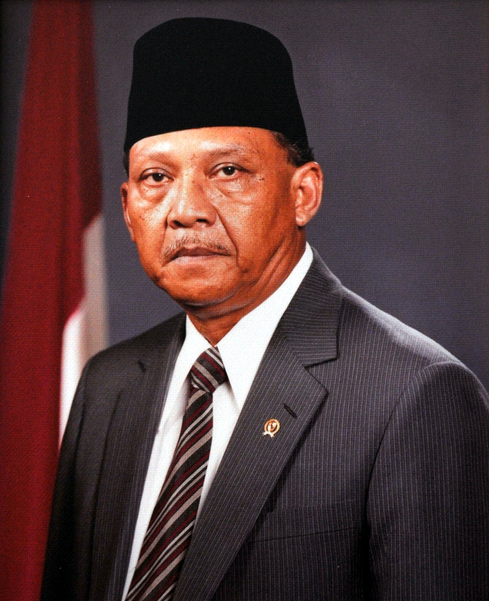
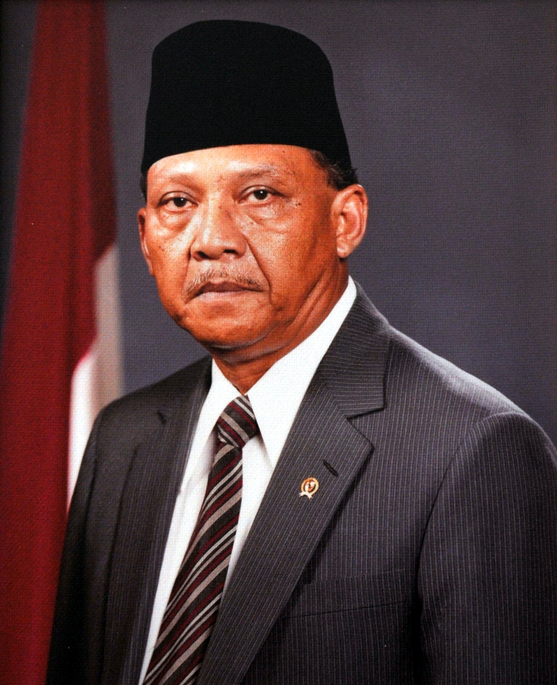

Tentang Kepemimpinan
Presiden Soeharto dan Wakilnya, Umar Wirahadikusumah, memimpin Indonesia dalam periode 1983-1988. Dalam kepemimpinannya, Indonesia mengalami pertumbuhan ekonomi, pembangunan infrastruktur, serta peningkatan stabilitas nasional. Pemerintahan Presiden Soeharto & Wakil Presiden Umar Wirahadikusumah (1983-1988) Pada periode 1983-1988, Indonesia berada di bawah kepemimpinan Presiden Soeharto dengan wakilnya, Umar Wirahadikusumah. Ini merupakan periode kelima kepemimpinan Soeharto sejak naik menjadi Presiden pada 1967. Masa pemerintahan ini menjadi bagian dari era Orde Baru yang berorientasi pada stabilitas politik dan pertumbuhan ekonomi.
Latar Belakang Pemerintahan Sebelum terpilih kembali pada tahun 1983, Soeharto telah memimpin Indonesia selama empat periode. Dalam pemilihan yang dilakukan oleh Majelis Permusyawaratan Rakyat (MPR), Soeharto kembali ditetapkan sebagai Presiden untuk periode 1983-1988, sementara Umar Wirahadikusumah, seorang jenderal militer senior, dipilih sebagai Wakil Presiden menggantikan Adam Malik. Umar Wirahadikusumah dikenal sebagai figur militer yang disiplin dan loyal kepada Soeharto. Sebelumnya, ia menjabat sebagai Panglima Komando Operasi Keamanan dan Ketertiban (Kopkamtib), yang memiliki peran penting dalam pengawasan stabilitas nasional pada masa Orde Baru.